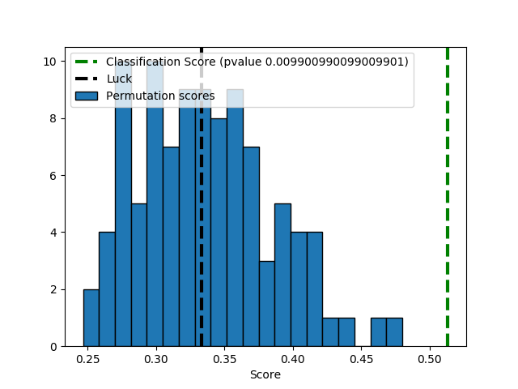

Note
Click here to download the full example code or run this example in your browser via Binder
Test with permutations the significance of a classification score¶
In order to test if a classification score is significative a technique in repeating the classification procedure after randomizing, permuting, the labels. The p-value is then given by the percentage of runs for which the score obtained is greater than the classification score obtained in the first place.
Out:
Classification score 0.5133333333333333 (pvalue : 0.009900990099009901)
# Author: Alexandre Gramfort <alexandre.gramfort@inria.fr>
# License: BSD 3 clause
print(__doc__)
import numpy as np
import matplotlib.pyplot as plt
from sklearn.svm import SVC
from sklearn.model_selection import StratifiedKFold
from sklearn.model_selection import permutation_test_score
from sklearn import datasets
# #############################################################################
# Loading a dataset
iris = datasets.load_iris()
X = iris.data
y = iris.target
n_classes = np.unique(y).size
# Some noisy data not correlated
random = np.random.RandomState(seed=0)
E = random.normal(size=(len(X), 2200))
# Add noisy data to the informative features for make the task harder
X = np.c_[X, E]
svm = SVC(kernel='linear')
cv = StratifiedKFold(2)
score, permutation_scores, pvalue = permutation_test_score(
svm, X, y, scoring="accuracy", cv=cv, n_permutations=100, n_jobs=1)
print("Classification score %s (pvalue : %s)" % (score, pvalue))
# #############################################################################
# View histogram of permutation scores
plt.hist(permutation_scores, 20, label='Permutation scores',
edgecolor='black')
ylim = plt.ylim()
# BUG: vlines(..., linestyle='--') fails on older versions of matplotlib
# plt.vlines(score, ylim[0], ylim[1], linestyle='--',
# color='g', linewidth=3, label='Classification Score'
# ' (pvalue %s)' % pvalue)
# plt.vlines(1.0 / n_classes, ylim[0], ylim[1], linestyle='--',
# color='k', linewidth=3, label='Luck')
plt.plot(2 * [score], ylim, '--g', linewidth=3,
label='Classification Score'
' (pvalue %s)' % pvalue)
plt.plot(2 * [1. / n_classes], ylim, '--k', linewidth=3, label='Luck')
plt.ylim(ylim)
plt.legend()
plt.xlabel('Score')
plt.show()
Total running time of the script: ( 0 minutes 7.287 seconds)